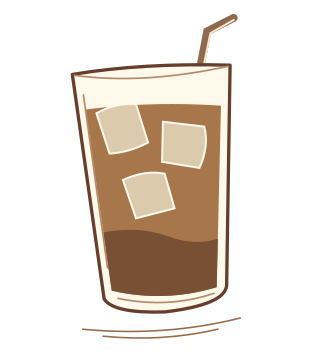

Served over ice
The colder side of coffee
Iced coffee and cold brew are made differently. Here is the distinction.

Coffee, cooled.
Iced coffee
This version starts with hot brewed coffee and is chilled before serving.
Brewed coffee · Ice · Milk or sweetener, optional
Origin and preparation
Mazagran, a sweetened cold coffee from Algeria, is an early example. Brew coffee hot, let it cool, and pour it over ice.
Cold brew
Cold brew gets its flavor from several hours of contact between cool water and coffee grounds.
Ground coffee · Cool water
Origin and preparation
Cold brewing has a long history in Japan. Steep the grounds in cool water for several hours, strain them out, and serve the coffee chilled.
Frappé
A Greek iced coffee with a thick, airy top made from instant coffee.
Instant coffee · Cold water · Ice · Sugar or milk, optional
Origin and preparation
The frappé became a staple of Greek café culture. Shake instant coffee with a little water and sugar if desired. Pour the foam over ice and add water or milk to taste.